DOKUMEN
SOFTWARE REQUIREMENTS SPECIFICATION (SRS)
SISTEM MANAJEMEN INFORMASI STOK BARANG TOKO
INVENTRA
Disusun oleh:
Setya Risky Adi Nugroho
Kelas XI RPL 5
Mata Pelajaran: Manajemen Proyek Perangkat Lunak
SMK TARUNA BHAKTI
TAHUN AJARAN 2026/2027
Puji syukur ke hadirat Tuhan Yang Maha Esa karena atas rahmat dan karunia-Nya, penyusunan dokumen Software Requirements Specification (SRS) untuk sistem INVENTRA dapat diselesaikan dengan baik. Dokumen ini disusun sebagai acuan kebutuhan perangkat lunak, desain sistem, pengujian, dan deployment pada proyek Sistem Manajemen Informasi Stok Barang Toko.
INVENTRA dirancang untuk membantu pengelola toko mencatat data produk, kategori, supplier, pergerakan stok, transaksi penjualan, dan laporan secara terpusat. Dokumen ini menjelaskan latar belakang, metode pengembangan, kebutuhan fungsional dan non-fungsional, rancangan sistem, struktur basis data, skenario pengujian, serta rencana deployment.
Penyusun menyadari bahwa dokumen ini masih memiliki keterbatasan. Oleh karena itu, kritik dan saran yang membangun sangat diperlukan untuk penyempurnaan dokumen maupun aplikasi. Ucapan terima kasih disampaikan kepada guru mata pelajaran, pembimbing, serta pihak-pihak yang telah membantu proses penyusunan dokumen ini.
Semoga dokumen ini bermanfaat dan dapat menjadi referensi yang jelas dalam pengembangan serta evaluasi sistem INVENTRA.
November 2026
Penyusun
[[TOC]]
Perkembangan usaha retail dan toko kebutuhan sehari-hari mendorong peningkatan volume data yang harus dikelola setiap hari. Data produk, kategori, supplier, stok masuk, stok keluar, dan transaksi penjualan tidak lagi efektif jika dicatat secara manual pada buku atau lembar kerja yang terpisah. Pencatatan manual rentan terhadap kesalahan hitung, data ganda, kehilangan catatan, serta keterlambatan penyusunan laporan.
Masalah utama yang sering muncul adalah ketidaksesuaian antara jumlah stok fisik dan jumlah stok tercatat. Kondisi ini dapat menyebabkan barang tidak tersedia saat dibutuhkan, penjualan terhenti, atau sebaliknya terjadi penumpukan stok. Selain itu, pemilik toko membutuhkan informasi stok menipis dan riwayat transaksi secara cepat untuk mengambil keputusan pembelian ulang.
Pemanfaatan aplikasi manajemen stok berbasis web dan mobile menjadi salah satu solusi yang sesuai. Aplikasi dapat menyimpan data secara terpusat, membatasi akses berdasarkan peran, mencatat setiap perubahan stok, serta menyajikan laporan secara otomatis. Dengan demikian, proses operasional toko menjadi lebih cepat, konsisten, dan mudah diaudit.
INVENTRA adalah sistem manajemen informasi stok barang toko yang dikembangkan menggunakan Flutter untuk antarmuka web dan Android, Express untuk REST API, serta PostgreSQL sebagai basis data. Sistem ini menyediakan fitur autentikasi, pengelolaan master data, pergerakan stok, transaksi penjualan, pembatalan penjualan, notifikasi stok menipis, dan laporan ringkasan.
Dokumen SRS ini disusun agar kebutuhan sistem terdokumentasi secara terstruktur. Dokumen menjadi dasar bagi pengembang, penguji, dan pihak sekolah dalam memahami ruang lingkup, batasan, rancangan, serta kriteria keberhasilan sistem INVENTRA.
Dokumen ini membahas sistem INVENTRA untuk satu toko dan satu gudang. Cakupan utama meliputi autentikasi, dashboard, kategori, supplier, produk, gambar produk, pergerakan stok, transaksi penjualan, riwayat penjualan, pembatalan penjualan, notifikasi stok menipis, laporan ringkasan, dan profil pengguna. Pembahasan deployment mencakup GitHub, Netlify atau Vercel, Render, Aiven for PostgreSQL, dan Cloudinary.
| Bab | Isi |
|---|---|
| BAB I | Pendahuluan yang berisi latar belakang, rumusan masalah, tujuan, manfaat, ruang lingkup, dan sistematika penulisan. |
| BAB II | Metode pengembangan Agile/Scrum, tahapan, jadwal, alasan pemilihan, serta tools yang digunakan. |
| BAB III | Analisis kebutuhan fungsional dan non-fungsional, karakteristik pengguna, kamus data, rancangan antarmuka, interaksi modul, dan batasan. |
| BAB IV | Desain sistem, diagram, ERD, skema tabel, struktur project, pengujian blackbox, dan deployment. |
| BAB V | Kesimpulan, saran pengembangan, dan penutup. |
| LAMPIRAN | Akun uji, perintah menjalankan aplikasi, screenshot, tautan repository/deployment, dan daftar pustaka. |
Pengembangan INVENTRA menggunakan metode Agile dengan kerangka kerja Scrum. Agile dipilih karena kebutuhan sistem dapat berkembang selama proses pengembangan, terutama pada penyesuaian fitur, tampilan, dan aturan validasi. Scrum memberikan struktur kerja berupa sprint pendek yang memungkinkan pengujian dan perbaikan dilakukan secara bertahap.
Dalam konteks proyek sekolah, tim dapat disederhanakan menjadi tiga peran. Product Owner berperan menentukan prioritas kebutuhan dan menerima hasil sprint. Scrum Master membantu menjaga proses kerja dan menghilangkan hambatan. Development Team bertanggung jawab merancang, membangun, dan menguji aplikasi. Setiap sprint menghasilkan increment yang dapat diuji.
Pengembangan direncanakan dalam empat sprint selama delapan minggu. Setiap sprint berdurasi dua minggu dan menghasilkan increment yang dapat diuji.
Tabel 2.1 Rencana Sprint Pengembangan INVENTRA
| Sprint | Minggu | Fokus | Hasil yang Diharapkan |
|---|---|---|---|
| Sprint 1 | Minggu 1–2 | Analisis kebutuhan, SRS, desain UI/UX, ERD | Dokumen kebutuhan, wireframe, rancangan basis data, dan backlog prioritas. |
| Sprint 2 | Minggu 3–4 | Setup backend, autentikasi, master data | API autentikasi, kategori, supplier, produk, dan upload gambar berjalan. |
| Sprint 3 | Minggu 5–6 | Modul stok, penjualan, laporan | Pergerakan stok, transaksi penjualan atomik, pembatalan, dan laporan ringkasan. |
| Sprint 4 | Minggu 7–8 | Integrasi Flutter, pengujian, deployment | Aplikasi web/Android terintegrasi, pengujian blackbox, repository GitHub, dan URL deployment. |
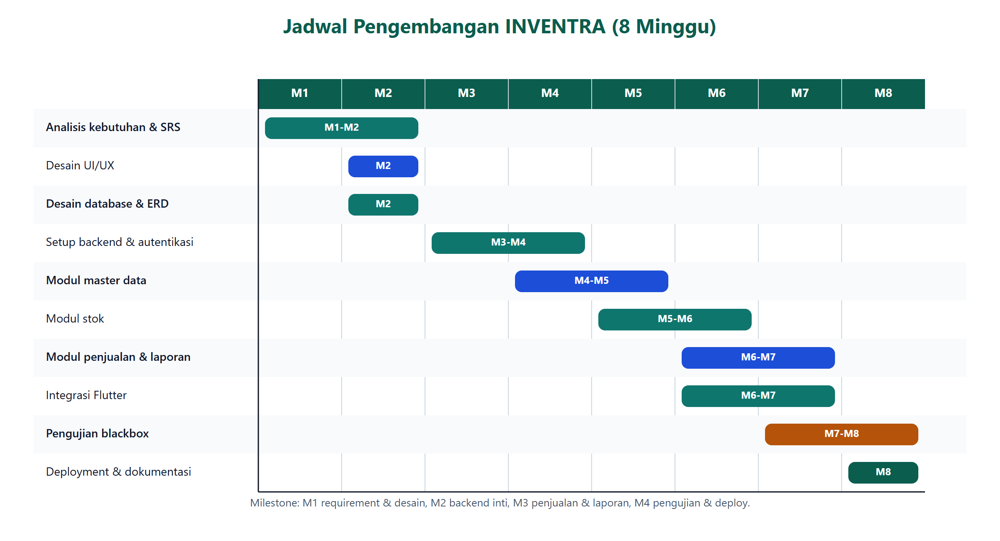
Gambar 2.1 Jadwal pengembangan INVENTRA selama delapan minggu
| Kategori | Tools | Kegunaan |
|---|---|---|
| Editor kode | Visual Studio Code | Menulis kode Flutter, JavaScript, SQL, dan dokumentasi. |
| Frontend | Flutter, Dart, Material 3 | Membangun antarmuka web dan Android. |
| Backend | Node.js, Express, Zod, JWT, Multer | Membangun REST API, validasi, autentikasi, dan upload. |
| Basis data | PostgreSQL, psql, pgAdmin | Menyimpan data dan mengelola skema. |
| Pengujian API | Node.js fetch, Postman | Menguji endpoint dan skenario validasi. |
| Version control | Git, GitHub | Mengelola riwayat kode dan branching. |
| Deployment | Netlify atau Vercel, Render, Aiven | Hosting frontend, backend, dan basis data. |
| Penyimpanan gambar | Cloudinary | Menyimpan gambar produk pada lingkungan produksi. |
| Dokumentasi | Word, PDF, draw.io/SVG | Menyusun SRS dan diagram. |
Nama sistem adalah INVENTRA, singkatan dari Inventory Terpadu. Nama ini dipilih karena sistem berfokus pada pengelolaan inventaris toko secara terpadu, mulai dari produk, stok, transaksi, hingga laporan. Tagline yang digunakan adalah Sistem Manajemen Stok Barang Toko.
| Termasuk dalam ruang lingkup | Tidak termasuk dalam ruang lingkup |
|---|---|
|
|
Kebutuhan fungsional menjelaskan layanan yang harus disediakan sistem. Prioritas menggunakan pendekatan MoSCoW: Must (wajib), Should (sebaiknya), dan Could (opsional).
Tabel 3.1 Daftar Kebutuhan Fungsional INVENTRA
| ID | Modul | Fitur | Aktor | Prioritas | Deskripsi |
|---|---|---|---|---|---|
| F-01 | Autentikasi | Registrasi akun | Publik | Must | Membuat akun baru dengan nama 3–100 karakter, email valid dan unik, serta password 6–72 karakter. Role otomatis staff. |
| F-02 | Autentikasi | Login dan logout | Admin, Staff | Must | Login menggunakan email dan password. Token JWT berlaku satu hari. Logout menghapus sesi lokal. |
| F-03 | Dashboard | Ringkasan operasional | Admin, Staff | Must | Menampilkan total produk, jumlah stok menipis, transaksi hari ini, dan daftar produk stok menipis. |
| F-04 | Kategori | CRUD kategori | Admin; Staff melihat | Must | Admin dapat menambah, mengubah, dan menghapus kategori. Nama kategori unik. Staff hanya dapat melihat. |
| F-05 | Supplier | CRUD supplier | Admin; Staff melihat | Must | Admin mengelola data supplier (nama, telepon, email, alamat). Nama supplier unik. Staff hanya dapat melihat. |
| F-06 | Produk | CRUD dan pencarian produk | Admin; Staff melihat | Must | Admin mengelola produk dengan SKU unik, kategori, harga, stok, dan stok minimal. Tersedia pencarian nama/SKU pada aplikasi, serta filter kategori, filter stok menipis, dan pagination pada API. |
| F-07 | Produk | Upload gambar produk | Admin | Should | Upload JPG, PNG, atau WEBP maksimal 5 MB. Gambar disimpan ke Cloudinary atau folder lokal. Gambar lama dihapus saat diganti. |
| F-08 | Stok | Stok masuk, keluar, dan penyesuaian | Admin, Staff | Must | Jumlah harus bilangan bulat positif. Stok keluar tidak boleh melebihi stok tersedia. Penyesuaian menimpa stok menjadi jumlah yang diisi. |
| F-09 | Stok | Riwayat pergerakan stok | Admin | Should | Menampilkan riwayat stok berdasarkan produk dan tipe, lengkap dengan pengguna, jumlah, catatan, dan waktu. |
| F-10 | Penjualan | Transaksi penjualan | Admin, Staff | Must | Keranjang berisi 1–50 baris produk unik. Server menghitung harga dan subtotal, menyimpan transaksi, mengurangi stok, dan mencatat movement keluar secara atomik. |
| F-11 | Penjualan | Riwayat transaksi dan pembatalan | Admin, Staff; Admin menghapus | Must | Layar Transaksi menampilkan timeline penjualan, pembelian (riwayat stok masuk), dan penyesuaian stok. Tersedia pencarian serta filter Semua/Pembelian/Penjualan/Penyesuaian. Staff hanya melihat penjualan; admin melihat semua. Admin dapat membatalkan penjualan dari riwayat penjualan; stok dikembalikan dan movement masuk dicatat. |
| F-12 | Notifikasi | Daftar stok menipis | Admin, Staff | Must | Menampilkan produk dengan kondisi stock ≤ min_stock. Belum berupa push notification. |
| F-13 | Laporan | Laporan ringkasan | Admin, Staff | Should | Menampilkan total produk, total stok, jumlah stok menipis, rata-rata stok, dan ringkasan kategori. |
| F-14 | Pengguna | Daftar pengguna (API) | Admin | Could | Endpoint GET /api/users untuk melihat daftar pengguna. Belum tersedia layar khusus di aplikasi Flutter. |
| F-15 | Profil | Profil dan logout | Admin, Staff | Must | Menampilkan nama, email, role, versi aplikasi, dan tombol logout. |
Tabel 3.2 Karakteristik Pengguna INVENTRA
| Pengguna | Hak Akses | Kemampuan Teknis | Kebutuhan Utama |
|---|---|---|---|
| Admin | Seluruh fitur staff, CRUD master data, upload gambar, riwayat stok, pembatalan penjualan, daftar pengguna melalui API. | Mampu mengoperasikan browser/smartphone dan memahami konsep stok. | Mengelola data master dan memastikan stok serta transaksi akurat. |
| Staff | Dashboard, melihat master data, stok masuk/keluar/adjust, transaksi penjualan, riwayat transaksi (penjualan tanpa hapus), laporan, notifikasi, profil. | Mampu mengoperasikan browser/smartphone untuk kegiatan harian. | Mencatat stok dan penjualan dengan cepat tanpa mengubah data master. |
| Publik | Registrasi dan login. | Pengguna umum yang memiliki email. | Membuat akun staff untuk mulai menggunakan aplikasi. |
Kamus data berikut menjelaskan elemen data utama yang digunakan sistem. Tipe data mengikuti implementasi PostgreSQL, sedangkan validasi tambahan dilakukan pada lapisan API.
Tabel 3.3 Kamus Data Utama
| Elemen | Entitas | Tipe | Wajib | Deskripsi dan Aturan |
|---|---|---|---|---|
id | Semua tabel | BIGSERIAL | Ya | Primary key, bertambah otomatis. |
name | users, categories, suppliers, products | VARCHAR(100/150) | Ya | Nama pengguna/kategori/supplier/produk. Panjang minimal 2–3 karakter sesuai entitas. |
email | users, suppliers | VARCHAR(150) | Ya (users), opsional (suppliers) | Format email valid. Pada users harus unik dan disimpan lowercase. |
password_hash | users | TEXT | Ya | Hash bcrypt cost 10. Password asli tidak pernah disimpan. |
role | users | ENUM user_role | Ya | Nilai admin atau staff; default staff. |
is_active | users | BOOLEAN | Ya | Status akun; default true. Akun nonaktif tidak boleh login. |
category_id | products | BIGINT | Ya | Foreign key ke categories; wajib ada saat produk dibuat. |
sku | products | VARCHAR(50) | Ya | Kode unik produk, diubah ke huruf besar, 2–50 karakter. |
description | categories, products | TEXT | Tidak | Deskripsi kategori/produk, maksimal 500–1000 karakter. |
price | products, sale_items | NUMERIC(12,2) | Ya | Harga satuan dalam Rupiah, tidak boleh negatif. |
stock | products | INTEGER | Ya | Jumlah stok saat ini, tidak boleh negatif. |
min_stock | products | INTEGER | Ya | Batas stok minimal; default 5. Stok menipis jika stock ≤ min_stock. |
image_url | products | TEXT | Tidak | URL gambar Cloudinary atau path /uploads/.... |
type | stock_movements | ENUM movement_type | Ya | Nilai in, out, atau adjust. |
quantity | stock_movements, sale_items | INTEGER | Ya | Jumlah barang; harus bilangan bulat lebih dari 0. |
note | stock_movements | TEXT | Tidak | Catatan pergerakan stok, maksimal 255 karakter. |
user_id | stock_movements, sales | BIGINT | Ya | Foreign key ke users; mencatat pelaku pergerakan/transaksi. |
product_id | stock_movements, sale_items | BIGINT | Ya | Foreign key ke products. |
sale_id | sale_items | BIGINT | Ya | Foreign key ke sales. |
product_name | sale_items | VARCHAR(150) | Ya | Snapshot nama produk saat transaksi agar riwayat tidak berubah. |
subtotal | sale_items | NUMERIC(14,2) | Ya | Hasil price × quantity, tidak boleh negatif. |
total | sales | NUMERIC(14,2) | Ya | Jumlah seluruh subtotal dalam satu transaksi. |
created_at | Semua tabel | TIMESTAMPTZ | Ya | Waktu data dibuat; default now(). |
updated_at | users, categories, suppliers, products | TIMESTAMPTZ | Ya | Waktu data diubah; diperbarui oleh trigger set_updated_at(). |
Antarmuka INVENTRA menggunakan Material 3 dengan warna utama hijau tua (#0F766E dan #0B5D4E) serta latar mint (#E6F7EF). Tampilan dibuat responsif untuk browser desktop dan layar Android, dengan navigasi bawah pada aplikasi mobile.
Tabel 3.4 Rancangan Layar Utama
| No | Layar | Komponen Utama | Aktor | Keterangan |
|---|---|---|---|---|
| 1 | Login | Logo, email, password, tombol masuk, tautan daftar | Publik | Validasi form dan pesan kesalahan. |
| 2 | Registrasi | Nama, email, password, konfirmasi password, tombol daftar | Publik | Role otomatis staff; kembali ke login setelah berhasil. |
| 3 | Dashboard | Header, kartu statistik, menu utama, daftar stok menipis, bottom navigation | Admin, Staff | Menampilkan total produk, stok menipis, dan transaksi hari ini. |
| 4 | Produk | Pencarian nama/SKU, daftar produk, tombol tambah | Admin, Staff | Admin dapat tambah/ubah/hapus; staff hanya melihat. |
| 5 | Detail Produk | Gambar, SKU, kategori, harga, stok, stok minimal, deskripsi | Admin, Staff | Menampilkan informasi lengkap produk. |
| 6 | Form Produk | Kategori, SKU, nama, harga, stok awal, stok minimal, gambar | Admin | Dialog form dengan validasi. |
| 7 | Kategori | Daftar kategori, jumlah produk, tombol tambah/ubah/hapus | Admin, Staff | Staff hanya melihat. |
| 8 | Supplier | Daftar supplier, nama, telepon, email, alamat | Admin, Staff | Staff hanya melihat. |
| 9 | Kelola Stok | Daftar produk, pemilih tipe stok, jumlah | Admin, Staff | Admin dan staff dapat mengubah stok. |
| 10 | Transaksi (timeline) | Pencarian, filter Semua/Pembelian/Penjualan/Penyesuaian, daftar transaksi, total transaksi per bulan, tombol tambah | Admin, Staff | Menggabungkan penjualan, riwayat stok masuk, dan penyesuaian stok. Staff hanya melihat penjualan. |
| 11 | Penjualan Baru | Pemilih produk, jumlah, keranjang, total, tombol simpan | Admin, Staff | Total dihitung server saat transaksi disimpan. |
| 12 | Riwayat Penjualan | Daftar penjualan, detail item, tombol hapus | Admin, Staff | Tombol hapus hanya untuk admin; stok dikembalikan saat dibatalkan. |
| 13 | Notifikasi | Daftar produk stok menipis | Admin, Staff | Berdasarkan kondisi stock ≤ min_stock. |
| 14 | Laporan | Kartu ringkasan, kesehatan stok, daftar stok menipis | Admin, Staff | Laporan ringkasan, bukan laporan keuangan. |
| 15 | Profil | Nama, email, role, versi aplikasi, logout | Admin, Staff | Logout menghapus sesi dan kembali ke login. |
stock_movements tipe in), bukan purchase order. Tab Penyesuaian menampilkan riwayat adjust. Dengan demikian, fitur ini tetap sesuai dengan skema database yang ada.
Prinsip rancangan antarmuka yang digunakan:
Tabel 3.5 Interaksi Antar-Modul
| Modul | Bergantung pada | Bentuk Interaksi |
|---|---|---|
| Autentikasi | Users | Memverifikasi email/password, membuat JWT, dan mengembalikan data pengguna. |
| Dashboard | Products, Sales | Mengambil total produk, stok menipis, dan transaksi hari ini. |
| Produk | Categories, Users | Validasi kategori, pencatatan stok awal, dan otorisasi admin. |
| Upload Gambar | Products, Cloudinary | Menyimpan file, memperbarui image_url, dan menghapus gambar lama. |
| Stok | Products, Users, StockMovements | Mengubah stok dan mencatat pergerakan dalam satu transaksi. |
| Penjualan | Products, StockMovements, Users | Menghitung total, mengurangi stok, dan mencatat movement keluar secara atomik. |
| Pembatalan Penjualan | Sales, Products, StockMovements | Mengembalikan stok dan mencatat movement masuk. |
| Notifikasi | Products | Membaca produk dengan kondisi stok menipis. |
| Laporan | Products, Categories, Sales | Mengagregasi data produk dan transaksi untuk ringkasan. |
| Supplier | Tidak terhubung langsung ke produk | Master data supplier masih berdiri sendiri; relasi ke produk menjadi saran pengembangan. |
POST /api/auth/login.is_active.in dengan catatan “Stok awal saat produk dibuat”.FOR UPDATE agar tidak terjadi race condition.in menambah stok, out mengurangi stok, dan adjust menimpa stok.sales dan sale_items, mengurangi stok, serta mencatat movement out.in dengan catatan pembatalan.sales dihapus; sale_items terhapus otomatis melalui cascade.GET /api/sales.GET /api/stock-movements untuk menampilkan riwayat stok masuk dan penyesuaian.GET /api/products?low_stock=true.stock ≤ min_stock.Tabel 3.6 Kebutuhan Non-Fungsional Produk
| ID | Kategori | Kebutuhan |
|---|---|---|
| NF-01 | Performance | Permintaan API untuk data normal harus selesai dalam waktu kurang dari 1 detik pada lingkungan lokal. Daftar data wajib menggunakan pagination dengan batas maksimal 100 baris. |
| NF-02 | Usability | Antarmuka menggunakan Bahasa Indonesia, warna kontras, tombol minimal 44 px, serta pesan sukses/kesalahan yang jelas. |
| NF-03 | Reliability | Transaksi stok dan penjualan harus atomik. Jika satu langkah gagal, seluruh perubahan dibatalkan. Health check tersedia di /api/health. |
| NF-04 | Security | Password di-hash bcrypt, JWT berlaku satu hari, endpoint privat memakai Bearer token, role diperiksa, input divalidasi, dan file upload difilter. |
| NF-05 | Compatibility | Aplikasi web berjalan pada Chrome, Edge, Firefox, dan Safari modern. Aplikasi Android menggunakan Flutter. iOS/macOS belum menjadi target pengujian. |
| NF-06 | Maintainability | Kode backend dipisahkan menjadi routes, controllers, validators, middlewares, dan utils. Konfigurasi rahasia disimpan di environment variable. |
| NF-07 | Scalability | Connection pool maksimal 10 koneksi, indeks pada kolom pencarian dan foreign key, serta pagination untuk menekan beban data besar. |
| NF-08 | Portability | Backend berjalan pada Node.js 18+ dan PostgreSQL 14+. Frontend dapat dibangun untuk web dan Android dari basis kode yang sama. |
| NF-09 | Data Integrity | Unique constraint, foreign key, check constraint, trigger updated_at, dan transaksi database menjaga konsistensi data. |
| NF-10 | Observability | Log HTTP menggunakan morgan, error handler terpusat, dan health check database. Belum tersedia APM atau centralized logging. |
| NF-11 | Accessibility | Form memiliki label/hint, kontras warna memadai, dan tombol dapat dijangkau. Audit aksesibilitas formal belum dilakukan. |
| NF-12 | Localization | Bahasa Indonesia dan format Rupiah. Dukungan multi-bahasa belum termasuk ruang lingkup. |
| Asumsi | Penjelasan |
|---|---|
| Koneksi internet | Aplikasi web dan Android memerlukan koneksi ke REST API. Mode offline belum tersedia. |
| Data awal | Admin seed tersedia melalui seed.sql; akun staff dapat dibuat melalui registrasi. |
| Mata uang | Semua harga menggunakan Rupiah dan disimpan sebagai NUMERIC. |
| Basis data | Produksi menggunakan PostgreSQL Aiven dengan SSL. Lokal menggunakan PostgreSQL. |
| Penyimpanan gambar | Produksi disarankan menggunakan Cloudinary agar gambar tidak hilang saat instance restart. |
INVENTRA menggunakan arsitektur tiga lapis. Lapisan klien berupa aplikasi Flutter yang berjalan di browser atau Android. Lapisan aplikasi berupa REST API Express yang menangani autentikasi, validasi, aturan bisnis, dan akses database. Lapisan data berupa PostgreSQL. Gambar produk dapat disimpan di Cloudinary atau folder lokal backend.
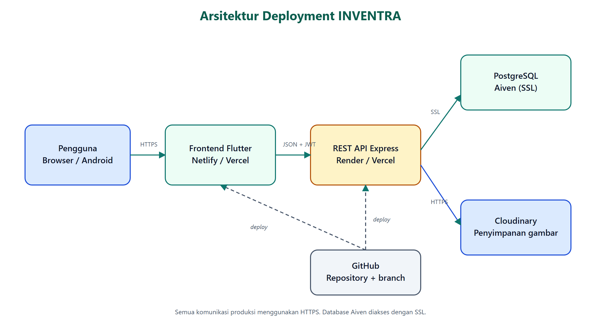
Gambar 4.1 Arsitektur deployment INVENTRA
Komunikasi klien ke API menggunakan HTTPS dan format JSON. Endpoint privat memerlukan header Authorization: Bearer <token>. API mengakses PostgreSQL menggunakan connection pool dan SSL pada lingkungan produksi. Cloudinary diakses melalui HTTPS untuk menyimpan gambar.
Diagram berikut menggambarkan alur login, mulai dari validasi form, permintaan ke API, penyimpanan token, hingga logout.
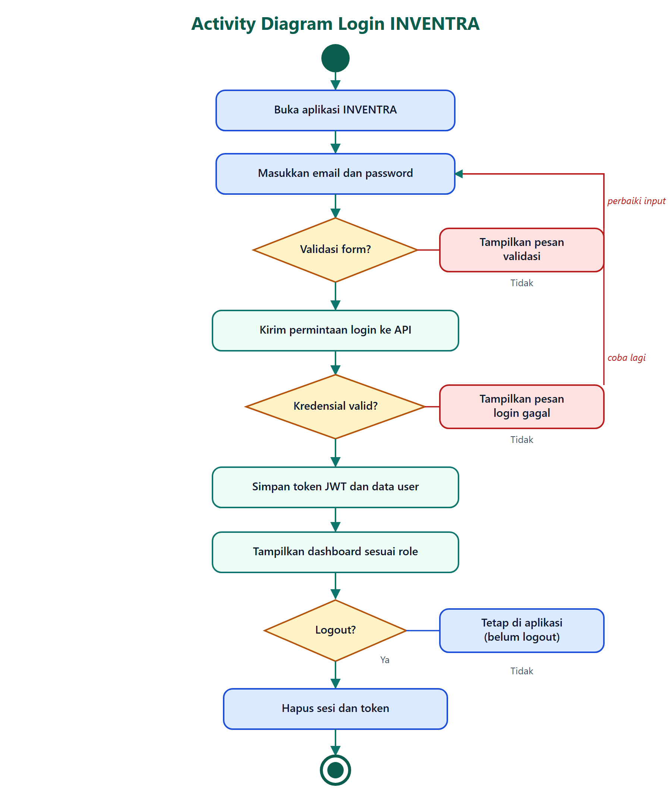
Gambar 4.2 Activity diagram login INVENTRA
Diagram berikut menggambarkan alur transaksi penjualan, termasuk validasi stok, penyimpanan transaksi, pengurangan stok, dan rollback ketika stok tidak mencukupi.
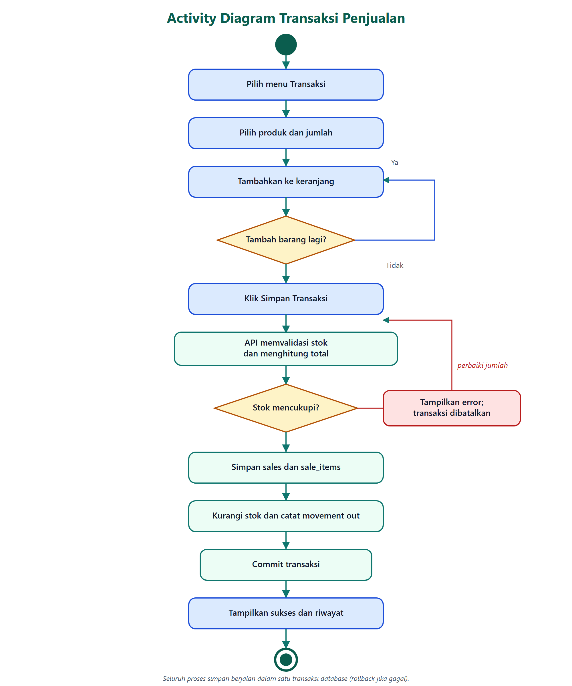
Gambar 4.3 Activity diagram transaksi penjualan
Use case diagram menunjukkan interaksi antara aktor Staff dan Admin dengan fitur sistem. Admin memiliki seluruh akses Staff ditambah fitur master data, upload gambar, pembatalan penjualan, dan daftar pengguna melalui API.
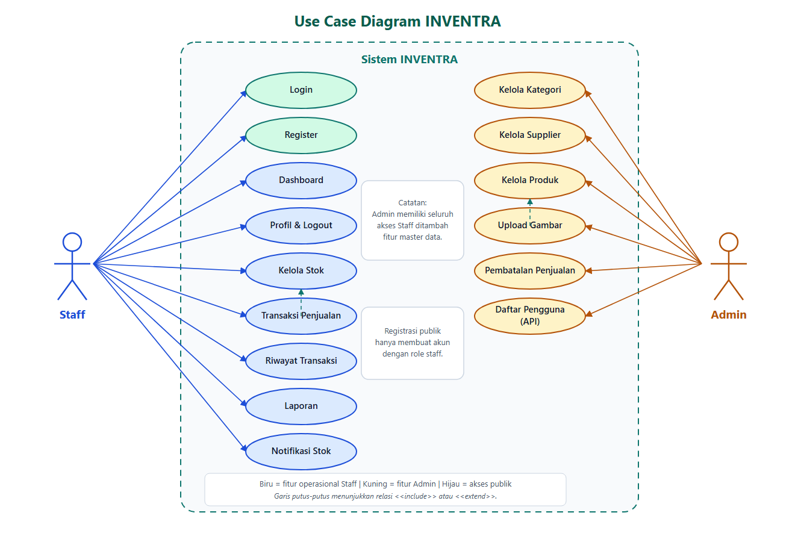
Gambar 4.4 Use case diagram INVENTRA
Tabel 4.1 Aktor dan Use Case
| Aktor | Use Case |
|---|---|
| Staff | Login, Register, Dashboard, Profil & Logout, Kelola Stok, Transaksi Penjualan, Riwayat Transaksi, Laporan, Notifikasi Stok. |
| Admin | Seluruh use case Staff ditambah Kelola Kategori, Kelola Supplier, Kelola Produk, Upload Gambar, Pembatalan Penjualan, dan Daftar Pengguna (API). |
| Publik | Register dan Login. |
Class diagram berikut merupakan model domain konseptual. Implementasi Flutter menggunakan widget, model User, serta service ApiClient, AuthService, dan Session. Entity lain dipetakan dari respons JSON API.
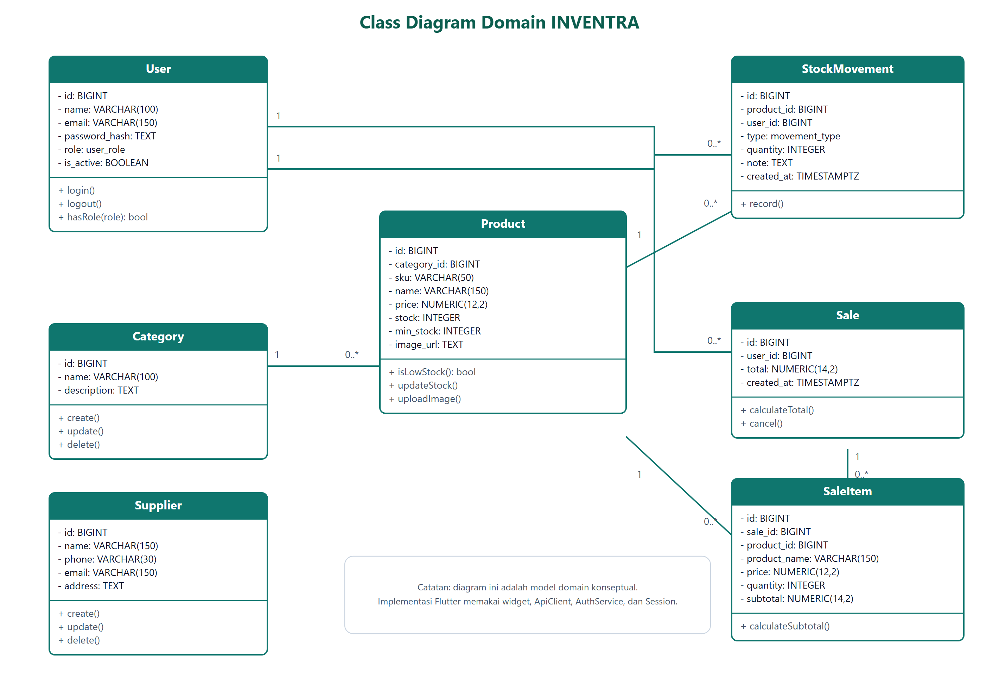
Gambar 4.5 Class diagram domain INVENTRA
Tabel 4.2 Pemetaan Class ke Implementasi
| Class | Implementasi | Keterangan |
|---|---|---|
| User | lib/models/user.dart, Session | Menyimpan id, nama, email, dan role pengguna yang login. |
| Product, Category, Supplier | Model data dari respons API | Direpresentasikan sebagai Map<String, dynamic> pada layar Flutter. |
| StockMovement, Sale, SaleItem | Respons API dan layar riwayat | Data ditampilkan sebagai list dan detail transaksi. |
| ApiClient | lib/services/api_client.dart | Menangani HTTP, token, error, dan upload multipart. |
| AuthService | lib/services/auth_service.dart | Login, registrasi, dan pengambilan profil. |
| Session | lib/services/session.dart | Menyimpan token dan data pengguna secara lokal. |
Basis data INVENTRA terdiri dari tujuh tabel utama: users, categories, suppliers, products, stock_movements, sales, dan sale_items.
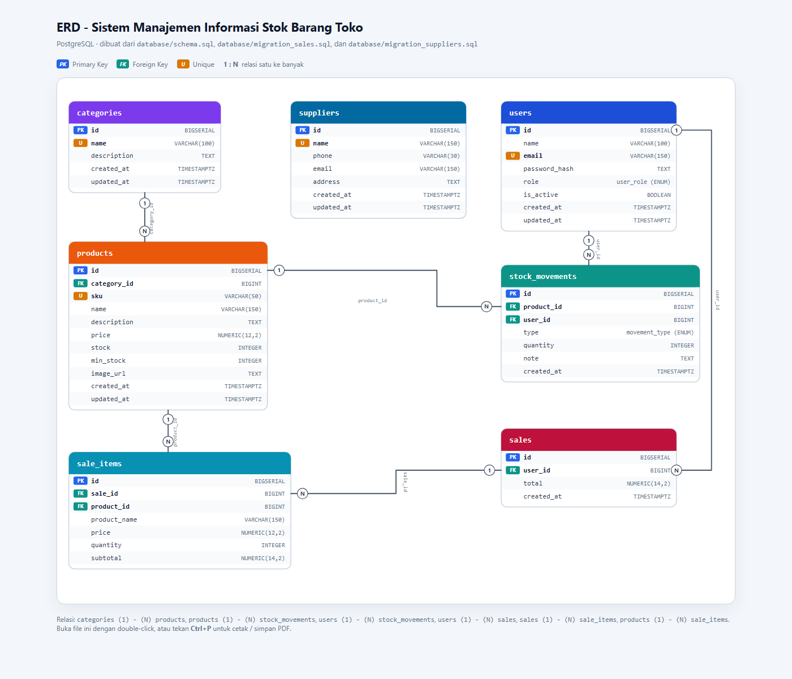
Gambar 4.6 Entity Relationship Diagram INVENTRA
Tabel 4.3 Skema Tabel users
| No | Kolom | Tipe | Null | Default | Keterangan |
|---|---|---|---|---|---|
| 1 | id | BIGSERIAL | Tidak | Auto | Primary key. |
| 2 | name | VARCHAR(100) | Tidak | - | Nama pengguna. |
| 3 | VARCHAR(150) | Tidak | - | Unik, format email, disimpan lowercase. | |
| 4 | password_hash | TEXT | Tidak | - | Hash bcrypt. |
| 5 | role | user_role | Tidak | staff | admin atau staff. |
| 6 | is_active | BOOLEAN | Tidak | true | Status akun. |
| 7 | created_at | TIMESTAMPTZ | Tidak | now() | Waktu dibuat. |
| 8 | updated_at | TIMESTAMPTZ | Tidak | now() | Diperbarui trigger. |
Tabel 4.4 Skema Tabel categories
| No | Kolom | Tipe | Null | Default | Keterangan |
|---|---|---|---|---|---|
| 1 | id | BIGSERIAL | Tidak | Auto | Primary key. |
| 2 | name | VARCHAR(100) | Tidak | - | Unik, minimal 2 karakter. |
| 3 | description | TEXT | Ya | - | Deskripsi kategori. |
| 4 | created_at | TIMESTAMPTZ | Tidak | now() | Waktu dibuat. |
| 5 | updated_at | TIMESTAMPTZ | Tidak | now() | Diperbarui trigger. |
Tabel 4.5 Skema Tabel suppliers
| No | Kolom | Tipe | Null | Default | Keterangan |
|---|---|---|---|---|---|
| 1 | id | BIGSERIAL | Tidak | Auto | Primary key. |
| 2 | name | VARCHAR(150) | Tidak | - | Unik, minimal 2 karakter. |
| 3 | phone | VARCHAR(30) | Ya | - | Nomor telepon valid. |
| 4 | VARCHAR(150) | Ya | - | Email supplier. | |
| 5 | address | TEXT | Ya | - | Alamat supplier. |
| 6 | created_at | TIMESTAMPTZ | Tidak | now() | Waktu dibuat. |
| 7 | updated_at | TIMESTAMPTZ | Tidak | now() | Diperbarui trigger. |
Tabel 4.6 Skema Tabel products
| No | Kolom | Tipe | Null | Default | Keterangan |
|---|---|---|---|---|---|
| 1 | id | BIGSERIAL | Tidak | Auto | Primary key. |
| 2 | category_id | BIGINT | Tidak | - | FK ke categories, ON DELETE RESTRICT. |
| 3 | sku | VARCHAR(50) | Tidak | - | Unik, uppercase, 2–50 karakter. |
| 4 | name | VARCHAR(150) | Tidak | - | Nama produk. |
| 5 | description | TEXT | Ya | - | Deskripsi produk. |
| 6 | price | NUMERIC(12,2) | Tidak | 0 | Harga satuan, ≥ 0. |
| 7 | stock | INTEGER | Tidak | 0 | Stok saat ini, ≥ 0. |
| 8 | min_stock | INTEGER | Tidak | 5 | Batas stok minimal, ≥ 0. |
| 9 | image_url | TEXT | Ya | - | URL gambar. |
| 10 | created_at | TIMESTAMPTZ | Tidak | now() | Waktu dibuat. |
| 11 | updated_at | TIMESTAMPTZ | Tidak | now() | Diperbarui trigger. |
Tabel 4.7 Skema Tabel stock_movements
| No | Kolom | Tipe | Null | Default | Keterangan |
|---|---|---|---|---|---|
| 1 | id | BIGSERIAL | Tidak | Auto | Primary key. |
| 2 | product_id | BIGINT | Tidak | - | FK ke products, ON DELETE CASCADE. |
| 3 | user_id | BIGINT | Tidak | - | FK ke users, ON DELETE RESTRICT. |
| 4 | type | movement_type | Tidak | - | in, out, atau adjust. |
| 5 | quantity | INTEGER | Tidak | - | Jumlah > 0. |
| 6 | note | TEXT | Ya | - | Catatan pergerakan. |
| 7 | created_at | TIMESTAMPTZ | Tidak | now() | Waktu pergerakan. |
Tabel 4.8 Skema Tabel sales
| No | Kolom | Tipe | Null | Default | Keterangan |
|---|---|---|---|---|---|
| 1 | id | BIGSERIAL | Tidak | Auto | Primary key. |
| 2 | user_id | BIGINT | Tidak | - | FK ke users, ON DELETE RESTRICT. |
| 3 | total | NUMERIC(14,2) | Tidak | 0 | Total transaksi, ≥ 0. |
| 4 | created_at | TIMESTAMPTZ | Tidak | now() | Waktu transaksi. |
Tabel 4.9 Skema Tabel sale_items
| No | Kolom | Tipe | Null | Default | Keterangan |
|---|---|---|---|---|---|
| 1 | id | BIGSERIAL | Tidak | Auto | Primary key. |
| 2 | sale_id | BIGINT | Tidak | - | FK ke sales, ON DELETE CASCADE. |
| 3 | product_id | BIGINT | Tidak | - | FK ke products, ON DELETE RESTRICT. |
| 4 | product_name | VARCHAR(150) | Tidak | - | Snapshot nama produk. |
| 5 | price | NUMERIC(12,2) | Tidak | - | Harga saat transaksi. |
| 6 | quantity | INTEGER | Tidak | - | Jumlah > 0. |
| 7 | subtotal | NUMERIC(14,2) | Tidak | - | price × quantity. |
Skema telah memenuhi bentuk normal ketiga (3NF). Data produk pada sale_items sengaja disalin (product_name dan price) sebagai snapshot historis agar riwayat transaksi tidak berubah ketika data produk diperbarui. Kolom subtotal dan total disimpan untuk mempercepat pembacaan laporan, tetapi nilainya selalu dihitung dan divalidasi oleh server.
users.role, products.category_id, products.lower(name), stock_movements.product_id, stock_movements.created_at, sales.created_at, sale_items.sale_id, dan sale_items.product_id.set_updated_at() memperbarui kolom updated_at pada users, categories, suppliers, dan products.withTransaction() menjalankan BEGIN, COMMIT, dan ROLLBACK untuk operasi stok dan penjualan.SELECT ... FOR UPDATE untuk mencegah perubahan bersamaan yang menyebabkan stok negatif.CHECK menjaga harga, stok, jumlah, dan subtotal tidak negatif.sistem-manajemen-stok/ ├── backend/ │ ├── database/ │ │ ├── schema.sql │ │ ├── seed.sql │ │ ├── migration_sales.sql │ │ ├── migration_suppliers.sql │ │ └── ERD.png │ ├── scripts/ │ │ ├── db-init.mjs │ │ └── smoke-test.mjs │ ├── src/ │ │ ├── config/ │ │ ├── controllers/ │ │ ├── db/ │ │ ├── middlewares/ │ │ ├── routes/ │ │ ├── utils/ │ │ ├── validators/ │ │ ├── app.js │ │ └── server.js │ ├── uploads/ │ ├── api.md │ ├── package.json │ └── README.md ├── flutter/ │ ├── lib/ │ │ ├── config/ │ │ ├── models/ │ │ ├── screens/ │ │ ├── services/ │ │ └── main.dart │ ├── android/ │ ├── ios/ │ ├── web/ │ ├── test/ │ ├── netlify-build.sh │ └── pubspec.yaml ├── docs/ │ ├── SRS_INVENTRA.docx │ ├── SRS_INVENTRA.pdf │ └── assets/ ├── render.yaml ├── netlify.toml ├── README.md └── .gitignore
Tabel 4.10 Lapisan Backend
| Folder | Tanggung Jawab |
|---|---|
src/routes | Mendefinisikan endpoint dan middleware per modul. |
src/controllers | Menangani request, memanggil query, dan mengembalikan respons. |
src/validators | Validasi body, parameter, dan query menggunakan Zod. |
src/middlewares | Autentikasi JWT, otorisasi role, upload, error handler, dan 404. |
src/db | Connection pool dan helper transaksi. |
src/config | Environment dan konfigurasi Cloudinary. |
src/utils | AppError, asyncHandler, dan format respons. |
database | Skema, seed, migrasi, dan ERD. |
Tabel 4.11 Lapisan Flutter
| Folder | Tanggung Jawab |
|---|---|
lib/config | Konfigurasi ApiConfig dan base URL API. |
lib/models | Model User dan pemetaan data. |
lib/screens | Layar login, register, dashboard, produk, kategori, supplier, stok, transaksi, riwayat, notifikasi, laporan, dan profil. |
lib/services | ApiClient, AuthService, dan Session. |
lib/main.dart | Entry point aplikasi dan konfigurasi tema. |
test | Widget test untuk login dan registrasi. |
Tabel 4.12 Ringkasan Endpoint API
| Modul | Method | Endpoint | Akses |
|---|---|---|---|
| Health | GET | /api/health | Publik |
| Auth | POST | /api/auth/register | Publik |
| Auth | POST | /api/auth/login | Publik |
| Auth | GET | /api/auth/me | Login |
| Kategori | GET, POST | /api/categories | Login/Admin |
| Kategori | GET, PUT, DELETE | /api/categories/:id | Login/Admin |
| Supplier | GET, POST | /api/suppliers | Login/Admin |
| Supplier | GET, PUT, DELETE | /api/suppliers/:id | Login/Admin |
| Produk | GET | /api/products | Login |
| Produk | GET, PUT, DELETE | /api/products/:id | Login/Admin |
| Produk | POST | /api/products | Admin |
| Produk | POST | /api/products/:id/image | Admin |
| Stok | POST | /api/products/:id/stock | Admin, Staff |
| Stok | GET | /api/stock-movements | Admin |
| Penjualan | GET, POST | /api/sales | Admin, Staff |
| Penjualan | DELETE | /api/sales/:id | Admin |
| Pengguna | GET | /api/users | Admin |
Pengujian menggunakan metode blackbox dengan fokus pada kesesuaian input, proses, dan output tanpa memeriksa struktur internal kode. Pengujian dilakukan melalui API, widget test Flutter, analisis statis, serta pemeriksaan manual antarmuka.
| Komponen | Keterangan |
|---|---|
| Sistem operasi | Windows 11 |
| Backend | Node.js, Express, PostgreSQL lokal |
| Frontend | Flutter web (Chrome) dan widget test |
| Akun uji | admin@toko.test dan user@toko.test |
| Perintah uji | npm test, flutter analyze, flutter test, flutter build web |
Tabel 4.13 Hasil Pengujian Blackbox
| No | Modul | Skenario | Hasil yang Diharapkan | Hasil Aktual | Status |
|---|---|---|---|---|---|
| 1 | Health | GET /api/health | Status 200, database connected | Sesuai | Lulus |
| 2 | Auth | GET /api/products tanpa token | Status 401 | Sesuai | Lulus |
| 3 | Auth | Register dengan email tidak valid dan password pendek | Status 422 dan pesan validasi | Sesuai | Lulus |
| 4 | Auth | Login admin dengan kredensial benar | Status 200, token diterima | Sesuai | Lulus |
| 5 | Auth | Login staff dengan kredensial benar | Status 200, token diterima | Sesuai | Lulus |
| 6 | Auth | Login dengan password salah | Status 401 | Sesuai | Lulus |
| 7 | Auth | GET /api/auth/me dengan token admin | Status 200, data admin | Sesuai | Lulus |
| 8 | Produk | Staff mengambil daftar produk | Status 200 | Sesuai | Lulus |
| 9 | Kategori | Admin membuat kategori baru | Status 201 | Sesuai | Lulus |
| 10 | Kategori | Staff membuat kategori | Status 403 | Sesuai | Lulus |
| 11 | Produk | Admin membuat produk baru | Status 201 | Sesuai | Lulus |
| 12 | Produk | Staff membuat produk | Status 403 | Sesuai | Lulus |
| 13 | Stok | Staff menambah stok masuk | Status 201, stok bertambah | Sesuai | Lulus |
| 14 | Stok | Stok keluar melebihi stok tersedia | Status 400, stok tidak berubah | Sesuai | Lulus |
| 15 | Upload | Admin upload gambar JPG valid | Status 200, image_url terisi | Sesuai | Lulus |
| 16 | Upload | Mengakses URL gambar hasil upload | Status 200, konten gambar | Sesuai | Lulus |
| 17 | Upload | Upload file dengan format tidak didukung | Status 422 | Sesuai | Lulus |
| 18 | Stok | Admin mengambil riwayat stok | Status 200 | Sesuai | Lulus |
| 19 | Stok | Staff mengambil riwayat stok | Status 403 | Sesuai | Lulus |
| 20 | Pengguna | Admin mengambil daftar pengguna | Status 200 | Sesuai | Lulus |
| 21 | Produk | Membuat produk dengan SKU duplikat | Status 409 | Sesuai | Lulus |
| 22 | Produk | Mengambil produk yang tidak ada | Status 404 | Sesuai | Lulus |
| 23 | Produk | Admin menghapus produk uji | Status 200 | Sesuai | Lulus |
| 24 | Kategori | Admin menghapus kategori uji | Status 200 | Sesuai | Lulus |
| 25 | Widget | Widget test login dan registrasi | 2 test lulus | Sesuai | Lulus |
| 26 | Analisis | flutter analyze | Tidak ada error | Sesuai | Lulus |
| 27 | Build | flutter build web --release | Build berhasil | Sesuai | Lulus |
| 28 | Penjualan | Transaksi dengan stok cukup | Status 201, total benar, stok berkurang, movement out | Sesuai | Lulus |
| 29 | Penjualan | Transaksi dengan stok tidak cukup | Status 400, seluruh perubahan rollback | Sesuai | Lulus |
| 30 | Penjualan | Admin menghapus transaksi | Status 200, stok kembali, movement in | Sesuai | Lulus |
| 31 | Produk | Filter low_stock=true | Hanya produk stock ≤ min_stock | Sesuai | Lulus |
| 32 | Produk | Pencarian nama/SKU | Hasil sesuai kata kunci | Sesuai | Lulus |
| 33 | Pagination | Limit default dan maksimal | Default 10, maksimal 100 | Sesuai | Lulus |
| 34 | Kategori | Hapus kategori yang masih memiliki produk | Status 409 | Sesuai | Lulus |
| 35 | Supplier | CRUD supplier oleh admin | Status 200/201 | Sesuai | Lulus |
| 36 | UI | Tombol admin tidak tampil untuk staff | Tombol tersembunyi | Sesuai | Lulus |
| 37 | Auth | Logout menghapus sesi | Kembali ke halaman login | Sesuai | Lulus |
| 38 | Responsif | Tampilan web pada lebar 430 px dan 1440 px | Layout menyesuaikan | Sesuai | Lulus |
Seluruh skenario utama lulus tanpa cacat kritis. Pengujian API otomatis mencakup 24 pemeriksaan dan seluruhnya lulus. Widget test Flutter untuk login dan registrasi lulus 2 dari 2. Analisis statis tidak menemukan error, dan build web berhasil. Pengujian manual menunjukkan pembatasan role berjalan sesuai harapan.
Gambar 4.7 Arsitektur deployment INVENTRA
Kode disimpan pada repository GitHub. Branch yang digunakan:
| Branch | Fungsi |
|---|---|
main | Versi stabil yang siap dinilai/di-deploy. |
develop | Integrasi fitur sebelum masuk ke main. |
feature/srs | Penyusunan dokumen SRS, diagram, dan lampiran. |
feature/deployment | Konfigurasi Netlify/Vercel, Render, Aiven, dan environment produksi. |
Konvensi commit yang digunakan: feat: untuk fitur, fix: untuk perbaikan, docs: untuk dokumentasi, dan chore: untuk konfigurasi. Perubahan digabungkan melalui pull request ke develop, kemudian ke main setelah pengujian.
DB_SSL=true. Kode menggunakan ssl: { rejectUnauthorized: false } agar dapat terhubung tanpa memasang CA cert secara manual.DB_NAME=defaultdb dan DB_ADMIN_DB=defaultdb untuk Aiven.psql dengan opsi sslmode=require.npm run db:init hanya jika koneksi admin diizinkan. Script akan melewati pembuatan schema jika tabel users sudah ada, kecuali DB_RESET=true.database/schema.sql menghapus tabel lama sebelum membuat ulang. Jangan jalankan pada database produksi yang sudah berisi data. Gunakan DB_RESET=true hanya pada database kosong.
backend, build command npm ci, dan start command npm start.JWT_SECRET, DB_SSL=true, dan kredensial Cloudinary./api/health.File render.yaml sudah disediakan sebagai blueprint. Free tier Render dapat mengalami cold start sehingga permintaan pertama terasa lebih lambat.
Netlify (utama):
flutter, build command bash netlify-build.sh, dan publish directory build/web.API_BASE_URL yang berisi URL backend Render, misalnya https://inventra-api.onrender.com.netlify.toml sudah mengatur redirect SPA ke index.html.Vercel (alternatif): build web secara lokal dengan flutter build web --release --dart-define=API_BASE_URL=..., lalu deploy folder build/web sebagai static site. Pastikan URL API menggunakan HTTPS dan endpoint CORS dapat diakses.
Pada lingkungan produksi, gunakan Cloudinary agar gambar produk tidak hilang ketika instance backend restart. Isi CLOUDINARY_CLOUD_NAME, CLOUDINARY_API_KEY, dan CLOUDINARY_API_SECRET. Jika variabel kosong, backend menyimpan gambar di folder uploads lokal.
Tabel 4.14 Environment Variable Produksi
| Variabel | Contoh | Keterangan |
|---|---|---|
NODE_ENV | production | Mode aplikasi. |
PORT | 3000 | Port backend; Render dapat mengatur otomatis. |
DB_HOST | pg-xxxx.aivencloud.com | Host Aiven. |
DB_PORT | 12345 | Port Aiven. |
DB_NAME | defaultdb | Nama database Aiven. |
DB_USER | avnadmin | User Aiven. |
DB_PASSWORD | ****** | Password Aiven; simpan sebagai secret. |
DB_SSL | true | Aktifkan koneksi SSL. |
DB_ADMIN_DB | defaultdb | Database untuk koneksi admin saat db:init. |
JWT_SECRET | string acak panjang | Secret token; wajib diganti. |
JWT_EXPIRES_IN | 1d | Masa berlaku token. |
UPLOAD_DIR | uploads | Folder upload lokal. |
CLOUDINARY_* | - | Kredensial Cloudinary. |
API_BASE_URL | https://api.example.com | Dipakai saat build Flutter web. |
https://<backend>/api/health dan pastikan database connected.API_URL=https://<backend> npm test dari folder backend.| Layanan | URL | Status |
|---|---|---|
| Frontend | [https://inventra.netlify.app] | Diisi setelah deploy |
| Backend API | [https://inventra-api.onrender.com] | Diisi setelah deploy |
| Repository | [https://github.com/username/inventra] | Diisi setelah push |
| Database | Aiven PostgreSQL (private) | Kredensial tidak dipublikasikan |
Dokumen SRS ini disusun sebagai gambaran menyeluruh sistem INVENTRA. Dengan adanya dokumen ini, diharapkan pengembangan, pengujian, dan deployment dapat dilakukan secara terarah. Penyusun menyadari masih terdapat keterbatasan, sehingga masukan dari guru dan penguji sangat diharapkan untuk penyempurnaan sistem.
| Role | Password | Keterangan | |
|---|---|---|---|
| Admin | admin@toko.test | admin123 | Akses seluruh fitur. |
| Staff | user@toko.test | user123 | Akses operasional tanpa master data dan pembatalan. |
# Backend cd backend npm install copy .env.example .env npm run db:init npm start # Frontend web cd flutter flutter pub get flutter run -d chrome --dart-define=API_BASE_URL=http://localhost:3000 # Build web produksi flutter build web --release --dart-define=API_BASE_URL=https://inventra-api.onrender.com # Pengujian cd backend npm test cd ..\flutter flutter analyze flutter test
Dokumentasi tampilan berikut diambil dari aplikasi INVENTRA yang berjalan pada lingkungan lokal. Sebagian data pada screenshot merupakan data uji, termasuk produk contoh dan transaksi percobaan.
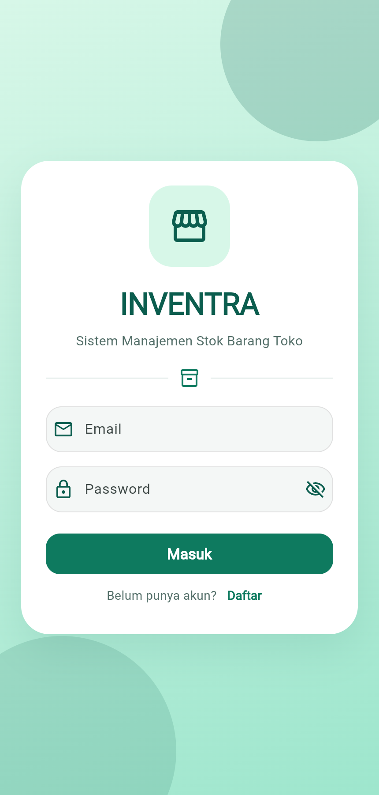
Gambar L.1 Halaman login INVENTRA
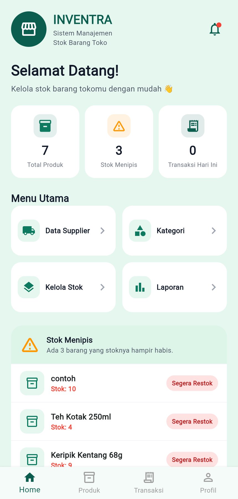
Gambar L.2 Dashboard INVENTRA
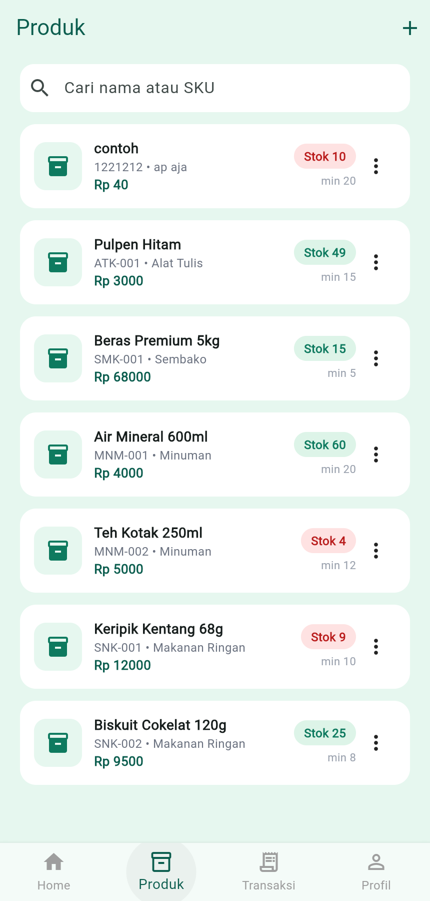
Gambar L.3 Daftar produk INVENTRA
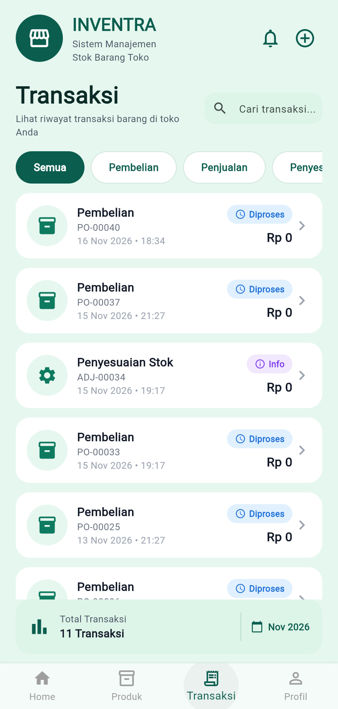
Gambar L.4 Halaman transaksi gabungan (penjualan, stok masuk, penyesuaian)
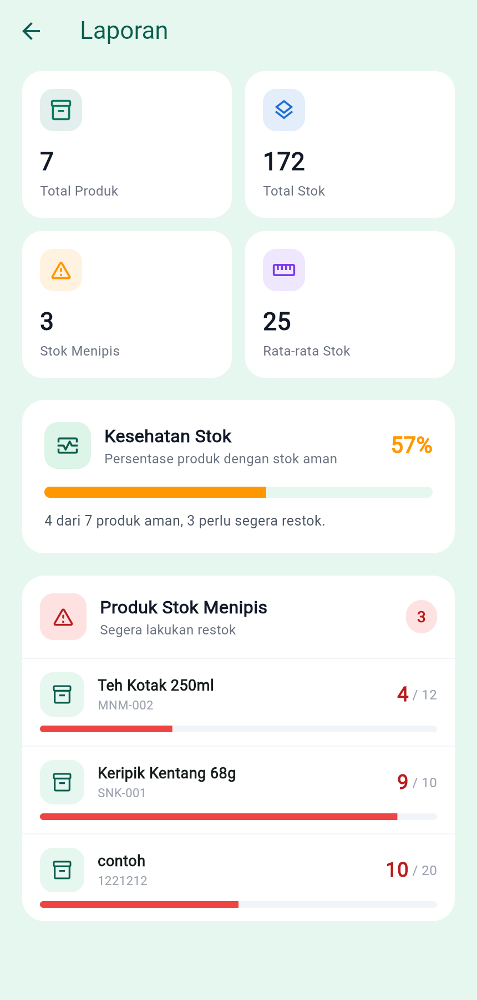
Gambar L.5 Halaman laporan ringkasan
| Layanan | URL |
|---|---|
| Repository GitHub | [https://github.com/username/inventra] |
| Frontend | [https://inventra.netlify.app] |
| Backend API | [https://inventra-api.onrender.com] |
| Dokumentasi API | /api/health dan backend/api.md |